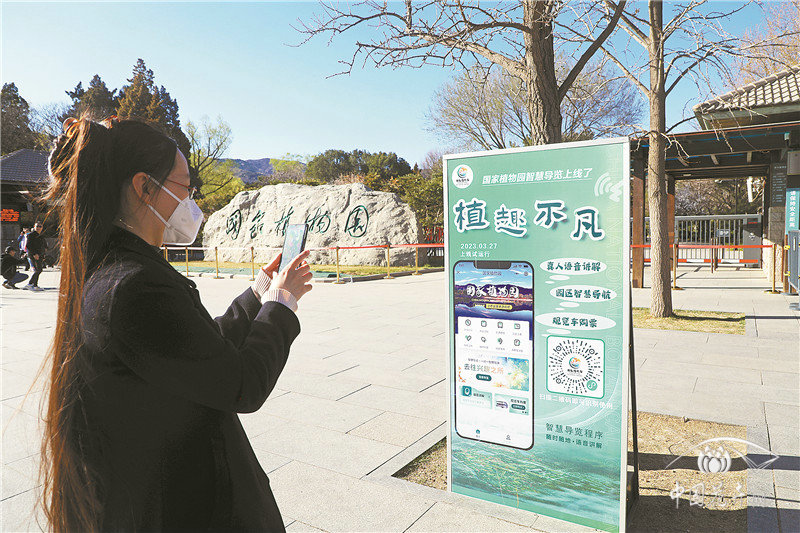

新京报讯（记者张璐）3月27日，国家植物园智慧导览系统“植趣不凡”上线试运行，游客只需在微信小程序中搜索“国家植物园植趣不凡”，就可以通过手机体验园区自助导航、真人语音讲解、观览车自助购票等多项功能，提升游客游园便捷性，实现智慧游园。
国家植物园智慧导览系统“植趣不凡”上线试运行，游客在扫描二维码。国家植物园供图 智能语音讲解是导览系统的一大特色。作为国家植物园科学传播功能的新形式，导览系统试运行阶段，国家植物园内共设置了80余处语音讲解点位，包含主要观花景区、植物专类园、历史文化景点及新优、珍稀植物介绍。智能语音讲解分为自动触发和手动扫码触发两种形式，游客可自行选择。
与大部分景区采用电子音的讲解方式不同，国家植物园智能语音讲解系统全部采用真人讲解的方式，配上舒缓的音乐，让大家听起来更加舒适。八七版电视连续剧《红楼梦》贾宝玉的扮演者、国家一级导演欧阳奋强作为特邀嘉宾，也参与了智能语音讲解系统的录制，为大家讲解国家植物园内有关曹雪芹的故事。
智慧导览功能——去往兴趣之所，相当于旅游者的“智能导游”。在手机里，整个园区以手绘地图的形式展现在游客面前，运用艺术手法展示景区格局、地标位置和交通线路，除了让人们更好地理解和更容易找到目的地，还具有独特的美感和纪念价值。 国家植物园面积大、景点多，通过“智能导游”不仅可以轻松了解景区全貌，还能通过实时位置更新，轻松实现“想去哪、就到哪”，方便游客查找主要景点、卫生间、购物点、餐饮服务等场所，让游客游览得更舒心。 同时，智慧导览系统还提供游览路线推荐、电瓶车购票、植物知识科普等功能，为游客游园、了解植物知识等提供更多便捷服务。国家植物园智慧导览系统的试运行，也是国家植物园挂牌一周年服务管理提升的一项主要工作，在后续工作中，智慧导览系统还将陆续增加预约购票、视频演示等功能，用更智慧的方式为游客提供优质服务。
公司概况
服务支持
合作代理
客户案例
产品分类一
产品分类二
产品分类三
产品分类四
公司新闻
行业动态
常见问题
网站地图
电话: 12316
电话：19131453429
微信：don-t_know-or-see